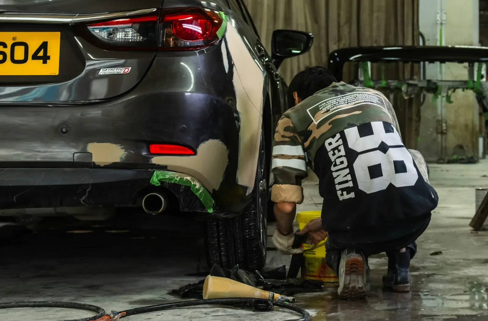

Smart repair
Herstellen in plaats van vervangen.
Smart repair is ontstaan omdat klanten hun herstelkosten wilden beperken. Onderdelen worden zoveel mogelijk hersteld, niet vervangen. Kies een techniek:
Uitdeuken zonder lakschade
Paintless Dent Repair. Met speciaal gereedschap wordt een deukje teruggezet, zonder dat de lak beschadigd raakt. Er hoeft dus niet gespoten te worden.
Geen demontageGeen wisselstukkenLagere kostprijsKortere herstelduurBeter voor het milieu
